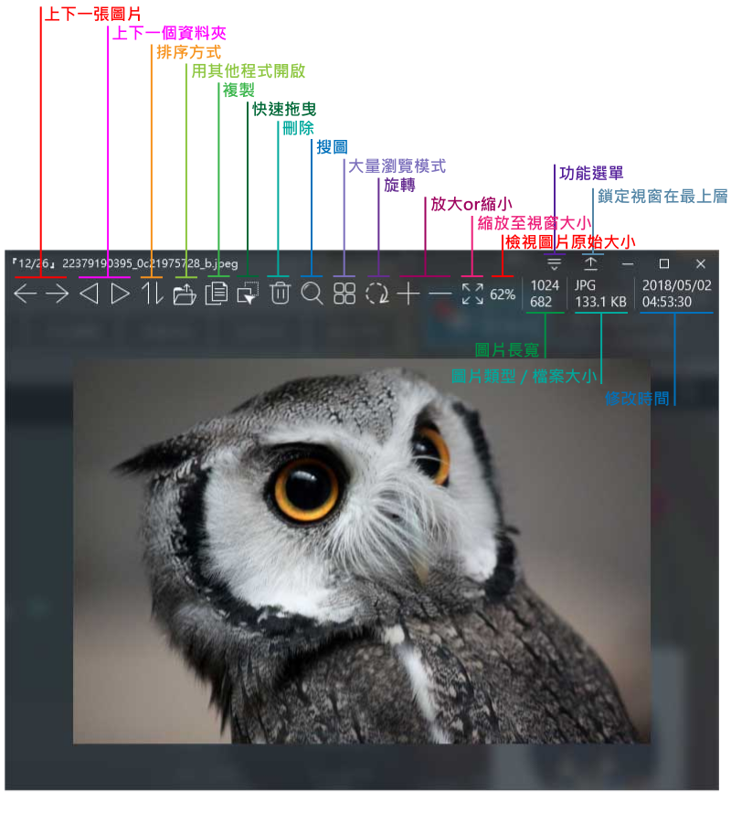
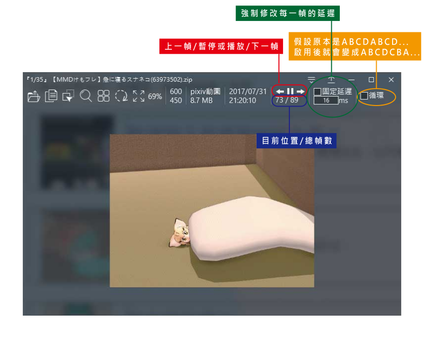
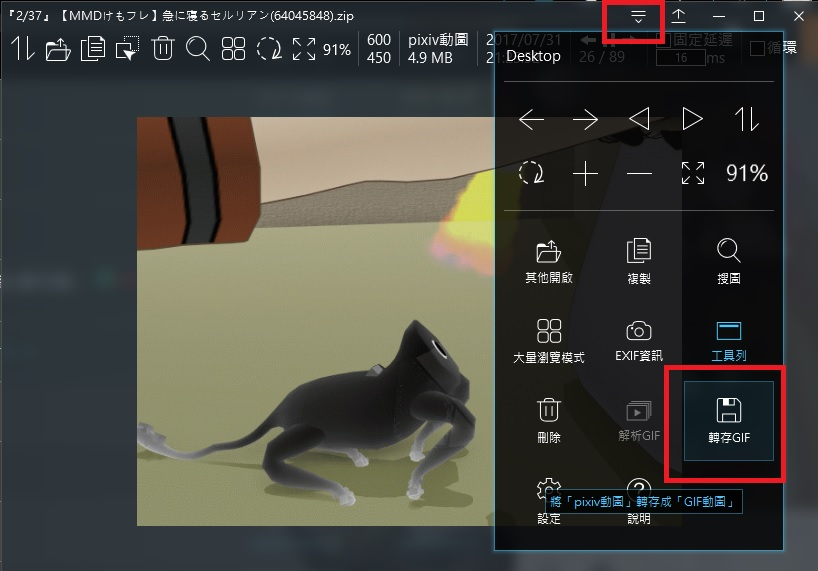

簡介
TiefSee 圖片檢視器 (舊名 AeroPic)
開源綠色免安裝，專注於看圖的軟體
簡約高雅的界面，全界面的透明毛玻璃
不在界面上擺一堆使用者看不懂的按鈕
使用大量瀏覽模式，看漫畫簡單方便
將視窗固定在最上層，協助完成複雜工作
在資料夾或桌面長按空白鍵，快速預覽圖片
支援多種特殊格式：pixiv動圖、apng、svg、psd、raw、webp、exe 等...
下載 TiefSee {{new_version}}
原始碼：GitHub
功能演示
透明毛玻璃UI
全視窗使用毛玻璃特效win7、win10 適用
簡約風格界面
- 圖示皆採用極細線條風格繪製
- 隱藏工具列後，依然可以透過右上角的「功能選單」來進行操作
自定程式主題
- 自定視窗背景顏色
- 自定標題列顏色
- 自定工具列的按鈕
大量瀏覽模式
-
專門用來看
漫畫的瀏覽模式，
一次載入資料夾內所有圖片，
可像瀏覽器一樣垂直捲動 - 快速切換上下一個資料夾(上下一集)

EXIF 資訊
檢視圖片EXIF資訊，有儲存地理位置的圖片，可直接用 Google Map 開啟。

支援多種格式
除了支援常見的 JPG、PNG、GIF、BMP格式外， 使用
Magick 解析引擎，亦支援多種特殊格式：
TIF、ICO、PSD、AI、SVG、APNG、WebP、RAW、PDF、EXE、HEIC 等...
TIF、ICO、PSD、AI、SVG、APNG、WebP、RAW、PDF、EXE、HEIC 等...

直接播放Pixiv動態圖
- 直接播放Pixiv動圖的zip壓縮檔 or 已解壓縮的Pixiv動圖資料夾
- 將Pixiv動圖輸出成GIF格式
- 載入Pixiv動圖後，不會影響切換上下一張圖片的功能， 會自動與同個資料夾內的其他pixiv動圖進行聯結

直接線上搜圖
不用將圖片拖到瀏覽器上面就可直接進行線上搜圖，支援：
- Google 搜圖：可搜尋相關網站，或類似圖片
- SauceNAO 搜圖 ：可搜尋 pixiv 之類的圖片網站、動畫截圖對應的集數
- IQDB 搜圖 ：可搜尋 Danbooru、 e-shuushuu、Sankaku 之類的網站
- Ascii2d 搜圖 ：可搜尋 pixiv、Twitter 之類的網站
多種複製方式
- 複製檔案
- 複製檔名
- 複製完整路徑
- 複製影像（可直接貼到其他程式）
- 複製PNG（可保留透明底）
- 複製base64（用於網頁設計）

用其他程式開啟
- 開啟 Windows系統 原生右鍵選單
- 開啟檔案總管，並把焦點放在目前的圖片上面
- 列印圖片
- 設定成桌布
- 使用 Windows系統 原生的APP選擇器開啟
- 使用其他第三方軟體開啟圖片（名單可自定）
鎖定視窗在最上層
將視窗鎖定在最上層後，TiefSee 就不會被其他視窗蓋過去快速拖曳
- 將圖片拖曳到其他程式開啟
- 將圖片拖曳到瀏覽器上傳
軟體需求
作業系統：
windows7、windows8、windows10
備註：
- 只有 win7 或 win10 可以使用透明玻璃特效
- 如果「無法執行」請安裝 Microsoft .NET Framework 4.6.2 ，或更高版本
- 「無法瀏覽GIF」或「無法開啟大量瀏覽模式」，請把IE更新到 IE11
- 要開啟 AI 或 PDF 檔，需要另外安裝 Ghostscript
更新曆史
3.0.1
(2019/04/24)
- 修復：電腦開機後，沒有啟動過 TiefSee，就無法使用 快速預覽 的BUG
3.0.0
(2019/04/22)
- 修復：圖片排序失效的BUG
- 修復：無法開啟根目錄底下圖片的BUG
- 修復：在大量瀏覽模式下，使用「開啟資料夾」會失敗的BUG
- 新增：可選擇滑鼠滾輪的作用為切換上下一張圖片，或縮放圖片
- 新增：可自定 是否「開機後自動讓 TiefSee常駐於背景」
- 新增：可自定 是否啟用「快速啟用」
- 新增：可自定 是否啟用「快速預覽」
- 新增：搜圖模式「Ascii2d 搜圖」(可搜尋 pixiv 或 Twitter)
- 新增：「快速預覽」可透過「長按滑鼠滾輪」來啟用
2.7.4
(2019/01/02)
- 新增：界面按鈕的特效
- 新增：自動記錄排序模式
- 新增：GIF可選擇使用 GDI 或 DirectX 來進行繪製
- 修正：沒有退出程式就無法刪除圖片或資料夾的BUG
- 修正：某些路徑有亂碼的圖片，無法開啟的BUG
- 修正：某些情況下完全無法啟動程式的BUG
- 修正：圖片無法顯示或是程式閃退的問題，進入「設定→其他→高品質成像-硬體加速」即可進行調整
- 新增：自動銳化圖片，增加圖片裡文字的辨識度
- 修正：某些情況下切換圖片後，依然顯示上一張圖片的BUG
- 修正：結束全螢幕模式後，工具列會自動顯示出來的BUG
- 修正：同資料夾裡面有容量很大的zip時，圖片就會開很慢的BUG
- 新增：全螢幕模式(F11)
- 修正：開啟路徑含有「%」符號的圖片會閃退的BUG
- 修正：程式無法完全退出的BUG
2.7.0
(2018/08/02)
- 新增：快速啟動，啟動速度比舊版的快一倍
- 新增：高品質成像，圖片不會因為過度的縮放導致畫質降低
- 新增：空白鍵預覽，在桌面or資料夾or回收桶，選擇圖片後長按空白鍵即可快速預覽圖片
- 優化：在大量瀏覽模式切換上下資料夾的速度加快
- 修正：RAW圖片不能複製的問題
- 修正：某些RAW圖片無法顯示的問題
- 修改：右鍵選單的界面
- 修改：開啟小於視窗大小的圖片時，以原圖大小來顯示
2.5.0
(2018/04/24)
(詳細說明)
- 優化：重新繪製界面圖示，改為極細風格圖示
- 新增：『功能選單』可在隱藏工具列或隱藏某些按鈕的情況下操作
- 新增：『解析動圖』解析GIF每一幀
- 新增：快速切換上下一個資料夾，用於看漫畫快速切換不同集數
- 新增：『快速拖曳』可拖曳至其他程式開啟，或拖曳至瀏覽器上傳圖片
- 新增：對HEIC、DDS圖片的支援
- 新增：自定圖片排序方式，與資料夾排序方式
- 新增：把圖片複製成base64格式
- 新增：「大量瀏覽模式」會自動判斷沒有副檔名的檔案是否為圖片
- 新增：可解析任何非圖片的檔案，在檔案總管顯示的圖示
- 修正：某些電腦程式視窗會錯位
- 修正：把檔案拖進視窗時，視窗跑至最上層的問題
- 修正：搜圖 sauceNAO 無法使用的BUG
- 修正：在沒有正確附檔名情況下，webP格式誤判成AVI格式
- 修正：開啟圖片後刪除整個資料夾導致程式閃退
- 修改：自動記錄『顯示或隱藏工具列』與『顯示或隱藏EXIF資訊』的操作
- 修改：在『大量瀏覽模式』下允許隱藏工具列
2.4.1
(2017/12/05)
- 新增：多種RAW格式的支援性：RAF、CRW、CR2、MRW、NEF、X3F、PEF、DNG、ORF、RW2、ARW、ERF、SR2、SRW
- 優化：加快RAW圖片的開啟速度(改用 DCRAW解析引擎)
- 修正：用大量瀏覽模式開啟 exe 或 lnk 會無法顯示的問題
- 修正：網路路徑無法使用大量瀏覽模式的問題
- 修正：隱藏工具列後視窗背景顏色異常的問題
2.4.0
(2017/11/28)
(詳細說明)
- 新增：大量瀏覽模式支援：PSD、EXE、ICO、WEBP、RAW 等..特殊格式的圖片
- 新增：可使用瀏覽器開啟大量瀏覽模式
- 新增：一鍵關閉所有個視窗
- 新增：可隱藏工具列
- 修正：可離線使用大量瀏覽模式
2.3.1
(2017/09/20)
- 優化：啟動速度
- 新增：自定義工具列顯示的按鈕
- 新增：自定視窗外框顏色
- 修正：某些電腦會閃退的BUG
2.2.0
(2017/09/16)
- 新增：『旋轉圖片』與『鏡像反轉』的功能
- 新增：根據exif資訊，自動修正jpg圖片的方向
- 修正：作業系統非安裝在C槽引起閃退的問題
2.1.0
(2017/09/12)
- 新增：讀取jpg與tif圖片的『exif資訊』
- 新增：使用『google map』開啟拍攝圖片的位置
- 新增：開啟檔案原生右鍵選單
- 修正：讀取exe圖示的某些BUG
- 修正：類型為GIF時，切換圖片會誤觸全螢幕
- 修正：多幀數圖片顯示不正確的size
- 修正：非檔案類型依然會誤觸『拖曳開啟』的問題
- 修正：中文輸入法導致快速鍵無法觸發的問題
2.0.1
(2017/08/30)
- 修正：2.0.0無法開啟資料夾的BUG
- 新增：多種圖片格式WebP、Raw ...等(使用Magick.NET 解析引擎
- 新增：允許選取多個檔案拖進程式裡面單獨檢視
- 新增：允許選取多的資料夾拖進程式裡面單獨檢視
- 新增：EXE執行檔的圖示解析
1.3.1
(2017/08/22)
- 新增：『用外部程式開啟圖片』選單的圖示
- 修正：從右下角拖曳視窗有時候會錯誤的BUG
- 修正：GIF無法雙擊視窗全螢幕的BUG
1.3.0
(2017/08/20)
- 新增：自定義視窗顏色
- 新增：關聯圖片附檔名
- 新增：搜圖類型『 IQDB』
- 修正：PSD是否需要解碼器改為自動判斷
1.2.0
(2017/08/13)
- 優化：啟動速度
- 新增：win7半透明毛玻璃特效
- 修正：win7無法縮放GIF的BUG
1.1.2
(2017/08/11)
- 新增：列印圖片
- 新增：設定圖片為桌布
- 新增：用其他程式開啟圖片
- 新增：顯示目前圖片比例
- 新增：顯示原始圖片大小
- 修正：重新繪製icon
- 修正：SVG顯示的size不正確
- 修正：切換GIF會閃爍的現象
- 修正：某些電腦開啟程式3秒後自動閃退
- 修正：某些情況無法複製檔名與路徑
- 修正：無法讀取根目錄圖片
- 修正：手機用USB傳輸線連接電腦，無法瀏覽手機內的圖片
1.0.1
(2017/08/06)
- 修正BUG
- 內建PSD解碼器，讓沒有安裝photoshop的電腦也能開啟PSD圖片
1.0.0
(2017/08/01)
- 初版
說明
TiefSee 是一款圖片顯示器，將圖片或資料夾拖曳至程式中即可開啟，亦可設定成系統預設開啟圖片的程式(
設定教學)。
開啟圖片後，會自動關聯該資料夾底下所有的圖片，供快速切換瀏覽。
支援格式包含：
| 常見格式 | JPG、PNG、APNG、GIF、BMP、TIF、ICO、WebP、PSD、PSB、PPM、TGA、PCX、PGM、PBM |
| 相機 RAW | RAF、CRW、CR2、MRW、NEF、X3F、PEF、DNG、ORF、RW2、ARW、ERF、SR2、SRW |
| 向量 | PDF、SVG、AI、WMF、EMF |
| 特殊 | EXE、LNK、Pixiv動圖 (下載教學)、HEIC (iOS相機格式) |
滑鼠滾輪捲動可控制圖片縮放
圖片小於視窗時，拖曳=拖曳視窗
圖片大於視窗時，拖曳=移動圖片位置
備註：
- 只有 win7 或 win10 可以使用透明玻璃特效
- 如果無法執行：請安裝 Microsoft .NET Framework 4.6.2 ，或更高版本
- 無法 瀏覽GIF 或 無法開啟大量瀏覽模式，請把IE更新到 IE11
- 要開啟 AI 或 PDF 檔，需要另外安裝 Ghostscript
工具列
工具列按鈕的顯示與隱藏可到 「設定 → 界面配置」裡面進行修改

Pixiv動態圖
開啟pixiv動圖後，工具列會多出控制選項

並且可以使用功能選單裡面的「轉存GIF」功能，將pixiv動圖轉存成GIF格式。

解析GIF
開啟GIF後，可以使用功能選單裡面的「解析GIF」功能，可以分解出GIF裡面的每一幀畫面。
快速鍵說明
| 操作 | 按鍵 |
| 下一張 | 方向鍵 → |
| 上一張 | 方向鍵 ← |
| 上一個資料夾 | < |
| 上一個資料夾 | > |
| 放大圖片 | 右Shift 或 + |
| 縮小圖片 | 右Ctrl 或 - |
| 旋轉 | R |
| 垂直鏡像 | V |
| 水平鏡像 | H |
| P網動圖-下一幀 | ] |
| P網動圖-上一幀 | [ |
| 圖片全滿 | F |
| 開啟圖片位置 | O |
| 開啟圖片原生右鍵選單 | M |
| 複製圖片 | Ctrl + C |
| 刪除圖片 | Delete |
| 重新載入圖片 | F5 |
| 進入 大量瀏覽模式 | B |
| 退出 大量瀏覽模式 | Back Space 或 Esc |
| 關閉程式 | Esc |
進階設定
在進階設定裡面可以修改「預設瀏覽器」、「用其他程式開啟圖片的名單」
目前還尚未做圖形化界面，只能手動編輯設定檔，用記事本即可進行編輯。
路徑： {程式資料夾}/data/ config.xml

說明
TiefSee 是一款圖片顯示器，將圖片或資料夾拖曳至程式中即可開啟，亦可設定成系統預設開啟圖片的程式(
設定教學)。
開啟圖片後，會自動關聯該資料夾底下所有的圖片，供快速切換瀏覽。
支援格式包含：
| 常見格式 | JPG、PNG、APNG、GIF、BMP、TIF、ICO、WebP、PSD、PSB、PPM、TGA、PCX、PGM、PBM |
| 相機 RAW | RAF、CRW、CR2、MRW、NEF、X3F、PEF、DNG、ORF、RW2、ARW、ERF、SR2、SRW |
| 向量 | PDF、SVG、AI、WMF、EMF |
| 特殊 | EXE、LNK、Pixiv動圖 (下載教學)、HEIC (iOS相機格式) |
滑鼠滾輪捲動可控制圖片縮放
圖片小於視窗時，拖曳=拖曳視窗
圖片大於視窗時，拖曳=移動圖片位置
備註：
- 只有 win7 或 win10 可以使用透明玻璃特效
- 如果無法執行：請安裝 Microsoft .NET Framework 4.6.2 ，或更高版本
- 無法 瀏覽GIF 或 無法開啟大量瀏覽模式，請把IE更新到 IE11
- 要開啟 AI 或 PDF 檔，需要另外安裝 Ghostscript
工具列
工具列按鈕的顯示與隱藏可到 「設定 → 界面配置」裡面進行修改
Pixiv動態圖
開啟pixiv動圖後，工具列會多出控制選項
並且可以使用功能選單裡面的「轉存GIF」功能，將pixiv動圖轉存成GIF格式。
解析GIF
開啟GIF後，可以使用功能選單裡面的「解析GIF」功能，可以分解出GIF裡面的每一幀畫面。
快速鍵說明
| 操作 | 按鍵 |
| 下一張 | 方向鍵 → |
| 上一張 | 方向鍵 ← |
| 上一個資料夾 | < |
| 上一個資料夾 | > |
| 放大圖片 | 右Shift 或 + |
| 縮小圖片 | 右Ctrl 或 - |
| 旋轉 | R |
| 垂直鏡像 | V |
| 水平鏡像 | H |
| P網動圖-下一幀 | ] |
| P網動圖-上一幀 | [ |
| 圖片全滿 | F |
| 開啟圖片位置 | O |
| 開啟圖片原生右鍵選單 | M |
| 複製圖片 | Ctrl + C |
| 刪除圖片 | Delete |
| 重新載入圖片 | F5 |
| 進入 大量瀏覽模式 | B |
| 退出 大量瀏覽模式 | Back Space 或 Esc |
| 關閉程式 | Esc |
進階設定
在進階設定裡面可以修改「預設瀏覽器」、「用其他程式開啟圖片的名單」
目前還尚未做圖形化界面，只能手動編輯設定檔，用記事本即可進行編輯。
路徑： {程式資料夾}/data/ config.xml
下載 pixiv動圖
「 Pixiv 動圖」 並不是一般的GIF圖片所以無法直接下載，必須使用 「 Px Downloader 」這個瀏覽器附加原件，才能把pixiv動圖下載到電腦
Px Downloader安裝：
|
Px Downloader
(Firefox 火狐) |
Px Downloader
(Google Chrome) |
安裝完後，在圖片的下方會多出一個「Px Downloader」的按鈕，點了就會下載
Px Downloader 預設是把下載的動圖儲存成GIF格式，GIF除了畫質很差外，下載速度也很慢， 建議把「動圖轉換模式」改成「None(Zip)」，TiefSee 可以直接播放從pixiv下載下來的zip壓縮檔， 或是把壓縮檔解開成資料夾亦可播放。

對照表：
| 畫質 | 檔案大小 | 下載時間 | 普及性 | |
| Zip | 高 | 小 | 零延遲 | TiefSee可直接瀏覽，
且TiefSee內建有把pixiv動圖轉換成GIF的功能 |
| GIF | 低 | 大 | 很慢 | 普及性高，常見的社群網站與通訊軟體皆支援 |
| APNG | 高 | 大到嚇死人 | 普通 | 普及性低，常見社群網站與通訊軟體皆無法使用 |
| WebP | 高 | 非常大 | 快 | 普及性低，常見社群網站與通訊軟體皆無法使用 |
將Pixiv動圖轉成GIF
程式內建有將Pixiv動圖轉換成GIF的功能，用TiefSee開啟「從Pixiv下載的動圖zip」， 或「動圖zip解開後的資料夾」，程式右上角的功能選單就會多出一個「轉存GIF」的選項可以使用。
如何設為預設開啟圖片的程式？
windows 是根據檔案附檔名來決定要用什麼程式開啟檔案，
所以對常見的圖片格式（jpg、gif、png）進行設定即可。
TiefSee 解壓縮完成後放到一個固定的位子，例如「D:\TiefSee」，
之後可以使用「自動關聯副檔名」，或「手動關聯副檔名」。

意見回饋
如果程式有BUG，或是想提供意見
可以到巴哈姆特的討論區回覆
要用巴哈姆特或email寄信給我也行
討論區 ： 討論區
巴哈姆特： hbl917070(深海異音)
Ｅmail ：hbl917070@gmail.com
常見問題
無法開啟PSD檔案
有可能是這個PSD檔案沒有在存檔的時候開啟「最大相容模式」，導致第三方軟體難以解析。
複製PNG圖片會沒有透明底
這是windows本身的限制。我有另外做一個「複製PNG」的按鈕，這雖然能複製透明底但並不是通用格式，在多數繪圖軟體都能直接貼上只有少部分軟體不支援。
| 不支援 |
Photoshop CC 2015、
SAI
|
| 支援 | Krita、 MediBang Paint Pro、 paint.net、 Microsoft Word |
為什麼GIF背景不是透明
因為是不一樣的圖片解析處理模式，如果用成透明，會需要2倍以上的讀取時間與運行資源。
如何刪除程式？
程式為免安裝，直接把 「TiefSee」(舊名 AeroPic)的資料夾 刪除即可，如果有使用過自動關聯副檔名的話，記得先進到設定裡面「解除關聯」
(步驟)
{kind=link}